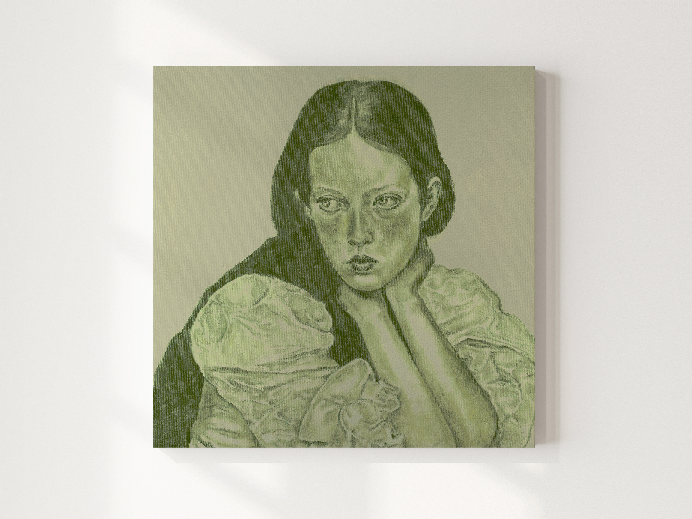

Benedicte Ambjerg
Work
Originals
Prints
About
Contact
Available Works
Original, one-of-a-kind paintings. Click any work to learn more and inquire.
Bella
Oil on canvas · 80 × 100 cm
Dorothy
Oil & oil pastel on canvas · 60 × 80 cm
Flora
Oil on canvas · 60 × 80 cm

Grace
Oil & oil pastel on canvas · 70 × 70 cm
Sadie
Gouache & oil pastel on paper · 57 × 77 cm
Silke
Gouache & oil pastel on paper · 57 × 77 cm
Sisters
Gouache & soft pastel on paper · 57 × 77 cm
Therese
Gouache & soft pastel on paper · 40 × 50 cm
Tonya
Gouache & oil pastel on paper · 57 × 77 cm